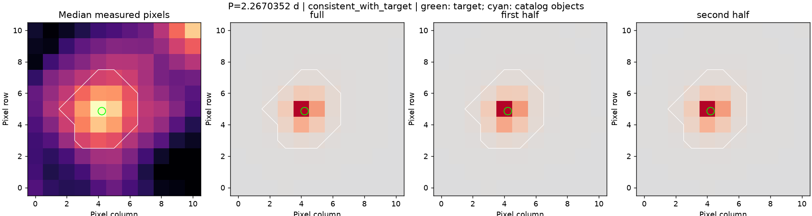
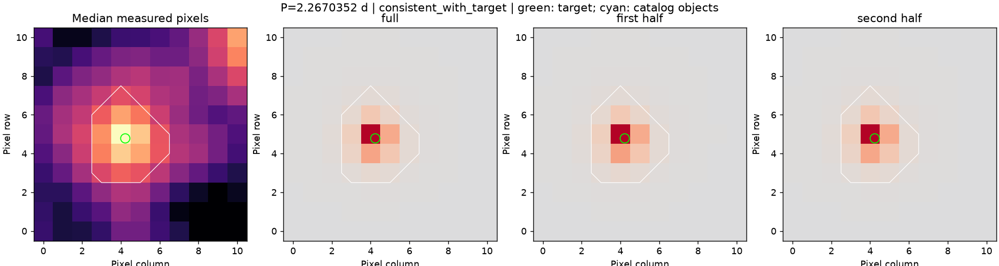

tu-her
已有真实开发对照，不是新的独立测试。
v4 选定周期：2.267035233794889 天；周期对照：correct_period。
来源去向：来源支持目标，进入人工复核；来源状态：target_supported_at_tess_resolution。
周期搜索与光变图 · 完整来源依据 · 可复现的来源输入
时段 25
SAP 辅助通道
- SAP_BKG：no_strong_correlation；相关系数 -0.07240844930030724；周期改善 -0.15333326308752016。
- POS_CORR1：no_strong_correlation；相关系数 -0.05821549854906214；周期改善 -0.3839966630946332。
- POS_CORR2：no_strong_correlation；相关系数 -0.03166278032507295；周期改善 -0.21107303435642644。
- MOM_CENTR1：no_strong_correlation；相关系数 0.6252794412216803；周期改善 0.3165568970839515。
- MOM_CENTR2：correlated_periodic_channel；相关系数 0.8497508157792663；周期改善 0.8696157267978726。
PDCSAP 辅助通道
- SAP_BKG：no_strong_correlation；相关系数 -0.07247149478529753；周期改善 -0.15333326308752016。
- POS_CORR1：no_strong_correlation；相关系数 -0.05845634844158087；周期改善 -0.3839966630946332。
- POS_CORR2：no_strong_correlation；相关系数 -0.031835508308426436；周期改善 -0.21107303435642644。
- MOM_CENTR1：no_strong_correlation；相关系数 0.62511133614654；周期改善 0.3165568970839515。
- MOM_CENTR2：correlated_periodic_channel；相关系数 0.8496993943563003；周期改善 0.8696157267978726。
像素结论：consistent_with_target。

绿色圈是目标位置；青色叉是输入目录对象；白线是原测光区域。颜色表示与光变同相的周期变化，位置判断不是精密光斑拟合。
时段 79
SAP 辅助通道
- SAP_BKG：no_strong_correlation；相关系数 0.08989183130741146；周期改善 -0.5616075386668817。
- POS_CORR1：no_strong_correlation；相关系数 0.10698746872363057；周期改善 -0.5479296012376706。
- POS_CORR2：no_strong_correlation；相关系数 0.02576190147881818；周期改善 -0.9303266776980437。
- MOM_CENTR1：no_strong_correlation；相关系数 -0.5466934508397651；周期改善 0.11613619736122083。
- MOM_CENTR2：no_strong_correlation；相关系数 0.5036323207059918；周期改善 -0.24877216350878806。
PDCSAP 辅助通道
- SAP_BKG：no_strong_correlation；相关系数 0.07874446734002344；周期改善 -0.5616075386668817。
- POS_CORR1：no_strong_correlation；相关系数 0.08522459238391092；周期改善 -0.5479296012376706。
- POS_CORR2：no_strong_correlation；相关系数 0.01905477368696135；周期改善 -0.9303266776980437。
- MOM_CENTR1：no_strong_correlation；相关系数 -0.5637085768546501；周期改善 0.11613619736122083。
- MOM_CENTR2：no_strong_correlation；相关系数 0.499073068873838；周期改善 -0.24877216350878806。
像素结论：consistent_with_target。

绿色圈是目标位置；青色叉是输入目录对象；白线是原测光区域。颜色表示与光变同相的周期变化，位置判断不是精密光斑拟合。